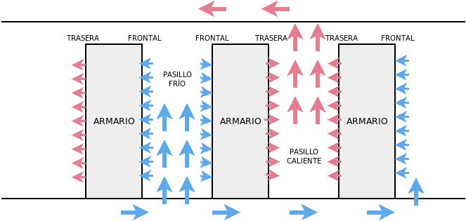
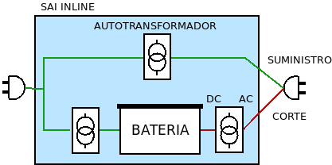

2.1. Seguridad física¶
Ya se ha definido la seguridad física como aquellas medidas protectoras de prevención y detección destinadas a proteger los activos físicos del sistema informático.
Las principales amenazas a la seguridad física son:
Las catástrofes (naturales o humanas) para las cuales no hay más defensa que procurar evitarlas huyendo de las ubicaciones en las que hay más probabilidad de que estas ocurran.
El acceso no autorizado que puede provocar robos o vandalismo. Los aspectos relativos al acceso físico los trataremos más adelante en el epígrafe dedicado exclusivamente al control de accesos.
Los accidentes fortuitos o intencionados como los incendios.
Las fallas de suministro eléctrico que pueden provocar la rotura de los activos (o la discontinuidad en el servicio, aunque no sea un aspecto de la seguridad física).
Las condiciones ambientales inapropiadas que pueden originar roturas o envejecimientos prematuros:
Temperatura (el rango óptimo es entre 15º y 25º).
Humedad (alrededor del 50%).
Polvo.
Es obvio que no es lo mismo gestionar la seguridad física de un equipo individual o pequeño servidor que la de un CPD.
2.1.1. CPD¶
Un CPD es el espacio donde una empresa u organización coloca juntos todos sus servidores para garantizar unas condiciones mínimas de seguridad física. De esta forma garantizar las condiciones para todos los servidores consiste en garantizar las condiciones para ese espacio.
El resto de equipos de la organización son equipos prescindibles que cumplen la función de conectar los usuarios al CPD. En consecuencia, son trivialmente sustituibles y basta con establecer en ellos mecanismos básicos de seguridad.
Las dimensiones de un CPD son muy variables y podemos disintiguir:
Los grandes centros de datos que pertenecen a empresas tecnológicas que ofrecen servicios de comunicaciones, a empresas grandes o a administraciones públicas. Por lo general, ocupan edificios dedicados.
Los medianos centros de datos de empresas medianas o sedes de empresas de mayor tamaño. Estos centros suelen ocupar salas dedicadas dentro de un edificio dedicado también a otros menesteres.
Los pequeños centros de datos de pequeñas organizaciones que pueden ocupar una pequeña empresa o bien un armario que concentra los servidores.
En consecuencia, también lo serán las estrategias que tengamos que seguir garantizar su seguridad.
2.1.1.1. Localización¶
Los edificios dedicados que albergan CPD deben situarse en lugares en que se eviten catástrofes o condiciones ambientales inapropiadas:
Con baja probabilidad de terremotos, inundaciones, nevadas.
Alejados de bases militares o edificios potencialmente peligrosos (p.e. almacenes dedicados al almacenaje de material explosivo).
Sin condiciones extremas de calor o de muy alta humedad.
Con buena cobertura eléctrica y de comunicaciones.
Si el CPD se sitúa dentro de un edificio dedicado a otras actividades, lo mejor es:
Colocarlo en la primera planta, si se dispone de montacargas; ya que por un lado es conveniente que no se sitúe en la planta más transitada (la baja) y, por otro, las plantas superiores estarán más expuestas al calor.
Alejado de espacios que lo perjudique como almacenes que tengan materiales inflamables.
Mejor en habitaciones interiores carentes de ventanas que en la fachada exterior.
2.1.1.2. Características del espacio¶
Las salas que albergan los equipos del CPD deben cumplir las siguientes características:
Los materiales de la pared o la puerta deben ser ignífugos.
Es conveniente insonorizar la sala para evitar que el ruido de los equipos y el sistema de climatización produzca ruido elevado en el exterior.
Las salas deben tener una altura elevada con el objetivo de instalar:
Un falso suelo para el cableado de datos y de corriente.
Un falso techo en el que se dispongan detectores y difusores antiincendios, aire acondicionado, etc.
Los equipos deben disponerse en hileras de armarios rack que enfrenten partes frontales con partes frontales y partes traseras con partes traseras. En consecuencia, estas hileras formaran pasillos unos con frontales a ambos lados y otros con partes traseras a ambos lados:

Los sistemas de climatización deben mantener una temperatura entre 15ºC y 25ºC, y una humedad entre el 40% y el 50%. Los equipos además, expulsan el calor por la parte trasera por lo que se formarán pasillos calientes a los que llega este aire que por su menor densidad asciende y es extraido en el falso techo y conducido para su refrigeración. El aire frío, por su parte, accede a la sala por el falso suelo y es liberado en los pasillos fríos, que son aquellos en los que se encuentran los frontales de los equipos.
Esquemáticamente, esta sería la circulación de aire:
Los sistemas antiincendios deben disponer de un sistema de detección y un sistema de extinción.
En lo referente al suministro eléctrico, debe asegurarse la calidad del mismo y evitar cortes, lo cual puede suponer la necesidad de disponer generadores. Si es posible es recomendable una doble acometida con empresas suministradoras distintas y que la instalación eléctrica sea independiente de la del resto del edificio para impedir que un problema en otro lugar afecte al CPD.
Los controles para el sistema eléctrico, de climatización y antiincendios deben situarse fuera de la sala a fin de que sólo el personal técnico informático tenga la necesidad de entrar.
La conexión es también conveniente que se contrate con dos empresas proveedoras que no compartan infraestructura. Por su parte, la infraestructura interna conviene también que esté duplicada.
Es fundamental monitorizar todo el hardware y las condiciones de la sala (temperatura, humedad) a fin de detectar problemas.
2.1.1.3. Certificación Tier¶
La certificación Tier es un estándar propuesto por la organización Uptime Institute que define el nivel de servicio y disponibilidad de un centro de datos. Se proponen cuatro niveles:
- Tier I (capacidad básica): sin elementos redundantes.
Este nivel se caracteriza por:
Una sala dedicada para los equipos.
No hay componentes redundantes, lo que origina que labores de mantenimiento u otros sucesos fortuitos puedan cortar el servicio.
Dispone de un equipo de climatización.
Un sistema de alimentación ininterrumpida (o sea, SAI).
Un grupo electrógeno o generador.
Debe tener una disponibilidad garantizada del 99,671%.
- Tier II (componentes de capacidad redundante): Tier I + cierta redundancia
Se caracteriza por:
Incluye redundancia en algunos componentes: SAI, sistema de climatización y grupo electrógeno. Por tanto, sigue habiendo situaciones en la que se puede interumpirse el servicio.
Debe tener una disponibilidad garantizada del 99,741%
- Tier III (concurrentemente mantenible): Tier II + redundacia eléctrica y de datos
Se caracteriza por:
Incluye, además, redundancia en las vías de distribución lo que facilita que se puedan hacer labores de mantenimiento aun en funcionamiento. Aun así, hay posibilidades aún de darse interrupciones como consecuencia del mantenimiento.
Debe tener una disponibilidad garantizada del 99,982%.
- Tier IV (tolerante a fallos): Tier III + redundancia total
Se caracteriza por:
La redundancia es aún mayor y es prácticamente imposible la interrupción del servicio por un suceso no planeado (a menos que sea extraordinariamente grave).
Debe tener una disponibilidad garantizada del 99,995%.
2.1.1.4. Tendencia actual¶
Con el abaratamiento de las conexiones a Internet y la irrupción de la fibra, que ha permitido anchos de banda considerables, muchas pequeñas, medianas y grandes empresas han decidido migrar sus CPD a los llamados servicios de computación en la nube. Estos servicios se caracterizan por proporcionar al cliente capacidad de cómputo y de almacenamiento a demanda; y poseen diversas ventajas frente a un CPD:
Desaparecen los costes de instalaciones y hardware.
Desaparecen los costes de manteniento de los activos físicos.
Pueden absorberse a muy bajo coste picos en la demanda, ya que estos servicios permiten temporalmente aumentar las capacidades de cómputo o de almacenamiento. En un CPD propio, en cambio, estos aumentos sólo pueden hacerse mediante la adquisición de nuevos activos físicos.
Se mejoran los tiempos de respuesta, ya que estos servicios se distribuyen por todo el planeta (CDN global), lo que permite a los clientes acceder a un servidor geográficamente cercano.
Los servicios de computación en la nube más conocidos son Google Cloud, Azure de Microsoft y AWS de Amazon.
2.1.2. Suministro¶
Un correcto y continuo suministro eléctríco es fundamental para que el sistema informático pueda ofrecer el servicio para el que está destinado. Analizamos aquí:
Cuáles son las fallas o anomalías electricas que puede sufrir el suministro.
Los SAI que permiten corregir o, al menos paliar estas anomalías.
2.1.2.1. Fallas eléctricas¶
Pueden distinguirse nuevo tipos distintos de anomalías en el suministro eléctrico.
Anomalía |
Descripción |
Efecto |
Causa frecuente |
|
|---|---|---|---|---|
1 |
Corte (o apagón) |
Interrupción total del suministro. |
|
|
2 |
Microcorte |
Bajada momentánea de tensión durante un breve tiempo (pocos ms) por debajo del 90% de la tensión nominal. |
|
|
3 |
Pico de tensión |
Subida momentánea de tensión durante un breve tiempo (pocos ms) por encima del 110% de la tensión nominal. |
|
|
4 |
Bajada de tensión |
Bajada sostenida de la tensión a partir del minuto. |
|
|
5 |
Subida de tensión |
Subida sostenida de la tensión a partir del minuto. |
|
|
6 |
Ruido eléctrico |
Distorsión de la señal generada por interferencias eléctricas o magnéticas. |
|
|
7 |
Conmutación transitoria |
Pequeña bajada de tensión del orden de nanosegundos. |
|
|
8 |
Variaciones de frecuencia |
Alteración de la frecuencia de 50 Hz. |
|
|
9 |
Distorsión armónica. |
Cambio en la forma sinusoidal de la onda por adición de frecuencias múltiplo de la original. |
|
|
Los colores de la tabla responde a las anomalías que es capaces de corregir un SAI dependiendo de cuál sea su tipo.
2.1.2.2. SAI¶
Un SAI (o UPS, si utilizamos las siglas en inglés) es un dispositivo que permite proteger a los equipos conectados a través de él de irregularidades en el suministro eléctrico, como es el caso de los apagones gracias a las baterías que incorpora. En consecuencia, el servidor no llega a apagarse y puede continuar dando servicio durante el corte y tras éste, si el corte no supera el tiempo de la batería. Obviamente, las baterías serán capaces de alimentar sólo durante un tiempo limitado a los dispositivos protegidos, por lo que si el apagón se prolonga demasiado, será inevitable que el servidor acabe apagado.
Adicionalmente a esta función principal, son capaces de comunicar a un ordenador cuál es su estado (usando las baterías, a punto de agotar la carga de las baterías, etc.), lo que permite disponer un software en éste que defina qué hacer en cada caso. Por ejemplo, cuando falte poco para agotar las baterías, lo más juicioso es apagar ordenadamente el ordenador para que, ya que se acabará apagando, al menos que se apague bien y se evite la pérdida o corrupción de datos.
Cuando el sistema es crítico y no nos podemos permitir quedarnos sin suministro (no ya sólo por el sistema informático, sino por el resto de las instalacines como ocurre en un hospital), se requiere el uso de un grupo electrógeno que generan la electricidad mediante motores diésel.
2.1.2.2.1. Tipos¶
Hay tres tipos de SAI:
- Offline
Es aquel que proporciona energía de sus baterías sólo mientras dure la interrupción del suministro eléctrico. En condiciones normales, los dispositivos que lo usan reciben corriente directamente de la red eléctrica, por lo que presenta dos grandes inconvenientes:
Sólo es capaz de proteger de los tres primeros tipos de anomalía.
Cuando falla el suministro de red, existe un tiempo mínimo de conmutación para que sean las baterías las que se hagan cargo de suministrar la energía, por lo que en la práctica no proporcionan un suministro ininterrumpido. Es decir, en estos SAIs, un fallo de tipo 1, se traduce en fallo de tipo 7. Lo conveniente es que este tiempo sea menor a los 5 ms, tiempo que son capaces de tolerar los ordenadores habituales.
Las regletas de protección protegen también de los microcortes y los picos de tensión, pero, obviamente, al carecer de baterías, no de un apagón.
- Online
En ellos se toma el suministro de red y se convierte en corriente continua para cargar la batería, y de ésta se toma corriente continua que se vuelve a convertir en alterna para alimentar a los dispositivos conectados. Esta solución evita los nueve tipos de anomalías y no genera ningún problema en la conmutación, porque de hecho es inexistente.

El problema de esta solución es que es muy cara.
- Inline o interactivo
Funcionan como los SAI offline, pero añaden un transformador que corrige los siete primeros tipos de anomalías (las cinco primeras siempre y la sexta y la séptima muy habitualmente) y que durante la conmutación es capaz de mantener la tensión.
La gran ventaja de esta solución frente a la anterior es que es mucho más barata, por lo que la mayoría de los SAI para el mercado no profesional utilizan este diseño.
2.1.2.2.2. Características¶
En la elección de un SAI hay diversos factores a tener en cuenta:
- Tipo
El tipo discutido bajo el epígrafe anterior.
- Factor de forma
Refiere la forma externa del SAI, de la que podemos distinguir dos tipos:
Torre, cuyas medidas dependerán del modelo de SAI.
Enrackable, que son aquellos SAI pensados para disponerlos dentro de un rack (o bastidor). Tienen interés cuando ya se tiene un bastidor en que se albergan servidores y dispositivos de red.
- Potencia aparente (S)
Es la potencia máxima consumida por el SAI de la red y que suele ser con la que el fabricante lo caracteriza. Se mide en VA. Esta, sin embargo, no coincide con la potencia útil capaz de suministrar a los dispositivos, medida en vatios (W).
- Potencia (P) / factor de potencia (\(\cos \phi\))
Es la potencia útil que el SAI es capaz de suministrar a los dispositivos conectados a él. Alternativamente, el fabricante puede proporcionar el factor de potencia:
\[P = S * \cos \phi\]- Baterías
Conocer las características de las baterías que incorpora, es indispensable para estimar durante cuánto tiempo podrá alimentar el SAI a los dispositivos después de un corte de suministro. Por lo general:
Se usan baterías SLA, o sea, baterías selladas de ácido-plomo.
El voltaje es de 12V.
Tienen distintas capacidades (5Ah, 7Ah, 9Ah). Lo normal es que un SAI de mayor potencia, tenga una batería de mayor capacidad o varias conectadas en serie, lo cual supone sumar sus voltajes:

En principio, no parece haber un estándar sobre sus dimensiones, pero los fabricantes tienden a hacerlas con los mismos tamaños y los SAIs comerciales a montar baterías con estas dimensiones. Lógicamente, a mayor capacidad, mayor tamaño.
Advertencia
El componente más frágil de un SAI es la batería y es más que común que, cuando un SAI deja de funcionar, lo haga porque la batería haya completado su vida útil. En este punto, lo que hay que hacer es confirmar que la culpable es la batería y, si es así, cambiarla por una batería de idénticas dimensiones, lo cual suele ser bastante sencillo y económico.
Ver también
En este breve vídeo de Youtube puede verse cómo cambiar la batería de un SAI.
Un aspecto importante del SAI en relación a sus baterías es si estas son modulares y permiten su sustitución sin necesidad de apagar el SAI y, en consecuencia, los equipos enchufados a él. En CPDs es fundamental que los SAI dispongan de esta característica.
- Monitorización
Todos los SAI disponen de algún tipo de aviso sonoro y algunos de un display en el frontal que da cuenta del estado del suministro o del propio SAI. Es muy común que ante un corte del suministro salte una alarma intermitente que dé cuenta del problema. Estas facilidades, no obstante, requieren ls cercanía física del administrador al propio SAI y no permiten una gestión ni automatizada ni telemática de tales avisos.
Algunos SAI, además, pueden permitir su monitorización a través de un puerto serie, un puerto USB o la conexión a red. Si nuestra intención es proteger al equipo de irregularidades en el suministro exclusivamente, o bien, asegurarnos de que ante un corte no perderemos el trabajo que estamos haciendo en nuestro equipo, la monitorización es irrelevante. Sin embargo, si el equipo es un servidor, es fundamental que el SAI sea monitorizable, ya que en ese caso podrá avisar al servidor de que su batería está próximo agotarse y este podrá tomar la decisión de apagarse ordenadamente.
Para la monitorización cada SAI suele proporcionar su propio software, sobre todo en Windows, pero para sistemas Linux existe un proyecto llamado Network UPS Tools con soporte para muchos de los SAI comerciales. Si nuestro servidor corre Linux es conveniente que comprobemos si tiene soporte en este proyecto.
2.1.2.2.3. Conexiones¶
Se deben conectar al SAI aquellos dispositivos que queremos que estén protegidos. Ahora bien, muchos SAIs disponen de dos tipos de conexiones de salida:
Las que toman corriente de la batería y, por tanto, no interrumpen el suministro ante un apagón.
Las que no lo hacen.
A las primeras conexiones deben conectarse dispositivos que sean indispensables para no interrumpir el servicio, esto es, el ordenador y los dispositivos de conexión de red; y, en caso de que se trate de un equipo de escritorio, también el monitor. Cualquier otro dispositivo podemos conectar al segundo tipo de toma, excepto las impresoras láser que generan grandes picos de consumo y ruido, con lo que es mejor no conectarlas al SAI en absoluto.
Si protegemos un servidor con dos fuentes de alimentación lo lógico es conectar cada fuente a un SAI distinto.
2.1.2.2.4. Estimaciones¶
Dos son las estimaciones que nos puede interesar hacer al adquirir un SAI:
De cuánta potencia se adquiere.
Cuánto durará en modo batería.
2.1.2.2.4.1. Potencia necesaria¶
Para calcular el SAI basta con:
Sumar todas las potencias de los aparatos que conectaremos a través del SAI.
Tener presente que deberemos pasar las potencias expresadas en watios a VA utilizando el factor de potencia que proporcione el SAI.
Que la suma de las potencias no supere el 70% de la potencia del SAI.
Basándonos en estas reglas, supongamos que deseamos comprar un SPS ONE (Ficha) para soportar un monitor que consuma 30W, unos altavoces de 20W y una torre cuyo consumo puede estimarse en 220W:
Como en la ficha de estos SAI se proporcionan directamente los valores de la potencia activa, se puede elegir directamente el adecuado: el SPS 900 ONE de 900 VA (o también el SPS 700 ONE que está muy poco por debajo de esa potencia).
Nota
En este caso, las potencias de los aparatos para el cálculo deben ser las máximas.
2.1.2.2.4.2. Autonomía¶
Para conocer cuánto tiempo será capaz el SAI de mantener encendidos los dispositivos que se alimentan a través de él, es preciso conocer cuánta potencia consumen. Conocida esta potencia, toca obtener las características de las baterías:
Tensión, típicamente de 12 voltios.
Capacidad, medida en Ah (Amperios-hora).
Eficiencia, que para las baterías de ácido-plomo, típica en los SAI podemos estimar del 80%.
El SAI puede tener varias baterías dispuestas en serie. La fórmula general para obtener (en minutos) la autonomía del SAI es:
Por ejemplo, para un SAI que sólo dispone una batería de ácido-plomo, de 7 Ah de capacidad y 12 voltios de tensión; y que está conectada a un servidor con poca carga que consume unos 40W de potencia la autonomía en minutos es:
Nota
En este caso, sin embargo, para el cálculo de la autonomía, lo más lógico es utilizar las potencias que normalmente consumen los dispositivos, no las máximas.
2.1.2.2.5. Configuración¶
Ver también
La configuración de un SAI monitorizable en un sistema Linux se encuentra en uno de los apéndices de Linuxnomicón.
2.1.2.2.6. Enlaces de interés¶
2.1.2.3. Ejercicios sobre SAI¶
Se ha decidido comprar un Riello iDialog para proteger un servidor que consume 250W y un switch de 20W.
Indique qué SAI de la gama en concreto necesita comprar.
Suponiendo que tenga baterías CSB de la serie GP, calcule la autonomía sabiendo que el switch opera a 15W normalmente y el servidor a 60W.
Nota
Para poder elegir la batería necesitaríamos o bien tener el propio SAI para ver cuántas y cuáles que lleva y de qué tamaño, o bien que se nos detallaran las dimensiones interiores en las que las baterías deben colocarse y la tensión que espera obtener el SAI de las baterías. Como no tenemos ni lo uno ni lo otro en este ejerciciom podemos guiarnos por el hecho en que en SAIs domésticos de este tipo los SAIs de menos potencia son más pequeños porque albergan una bateria, y los más potentes son más grandes porque admiten dos en paralelo.
En un rack se disponen 5 switches cada uno de los cuales consume una potencia máxima de 20W. y un servidor que un consumo máximo de 275W. Se decide comprar un Eaton de la gama 5SC soportado por NUT.
Indique qué SAI de la gama necesita comprar.
Revise en la documentación qué baterías incorpora y haga una estimación de su autonomía sabiendo que los switches operan a unos 15W y el servidor a 75W.
Se desea comprar un SAI para conectar los siguientes aparatos eléctricos:
Un servidor cuya potencia máxima es 500W.
Un monitor de 50W.
Un switch de 35W.
Se pide:
Si se ha decidido adquirir uno de la serie SPS One, ¿qué modelo de la serie es necesario comprar?
Suponiendo que de forma habitual se decida no conectar ni el monitor ni el switch a la batería, y el servidor consume aproximadamente 80W de media, ¿cuál es la autonomía del SAI?
Configure una máquina virtual con la última versión estable de Debian para que atienda los eventos de un SAI ficticio (emulado con el driver ups-dummy), de manera que:
El administrador sea admin con contraseña trestristestigres.
El usuario de monitorización sea voyeur con contraseña atrevido.
Traduzca los mensajes de advertencia.
Compruebe que la configuración es funcional haciendo que el ordenador se apague ante un estado de batería baja del SAI.